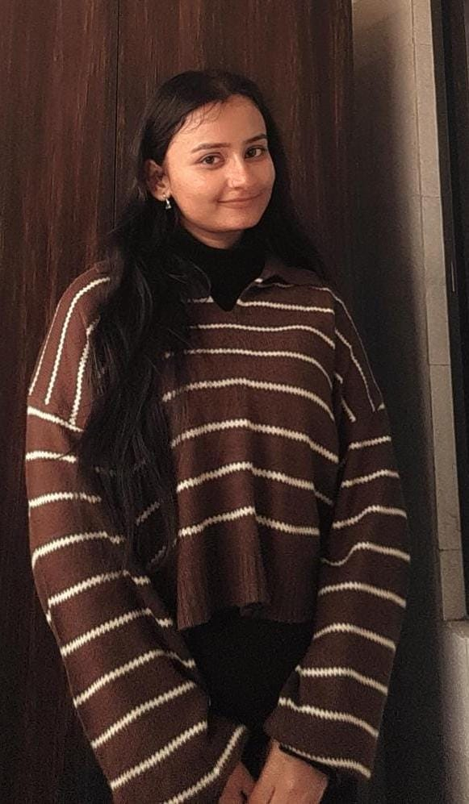

Curiosity, a skipped safe path, and a quiet evening at 9:34 PM.

The person behind the resume.
01
You know what?
That one kid who just couldn't stop asking questions? Yep - that was me. 😄 Why is the moon following us? What's inside the TV? Can I build my own robot?
Papa-Mummy were my first search engines. Grandparents? The OG storytellers. And my teachers? Well... let's just say they earned their salaries 😂
(Also - fun fact: I survived childhood without ChatGPT. I deserve an award for that, right?)
Fast forward a bit - my curiosity met science, and boom! Engineering happened. But here's the twist - I didn't just want to study tech. I wanted to use it to build stuff. Stuff that makes people's lives easier. Prettier. Smarter.
That's how I found myself diving into Android development, sketching UI ideas at 2 AM, exploring product thinking, and yes - breaking things, fixing them, then breaking them again (because, code 😅).
And guess what? Every "wait, how does this work?" turned into a project. Every "there has to be a better way" became a new idea. And that's kind of my thing now - building digital stuff that feels like it just gets the user.
02
My first tech crush: websites
I still remember the moment it hit me - "Wait... I can actually build a website?!"
No tech mentor, no big sibling in CS, not even a clue where to start. Just me, my curiosity, and a bunch of tabs open at once. 😄
I dove into frontend development headfirst - built my first page, broke it, fixed it, broke it again... but each tiny "It works!" moment felt like magic. It wasn't just code - it was creating something out of nothing. That's what got me hooked.
And just when I thought things couldn't get cooler... Android walked into my YouTube recommendations.
03
And then... Android happened
One casual scroll, one random YouTube video: "Why I Love Android?" - I clicked it. Just curiosity at first... but boom - instant connection. Suddenly I was knee-deep in Kotlin tutorials and lowkey arguing with XML like it owed me money. 😅
No mentor. No roadmap. Just me vs. Gradle errors (spoiler: Gradle won... often). But that joy when the app finally ran? Chef's kiss. ✨
That's when I knew - this is my thing.
04
UI/UX? Total accident. Total obsession.
During a project, our designer fractured her hand. Chaos. Deadline. Panic. "Deepika, can you try the UI?" they asked - and just like that, I was handed the wheel... with no map.
I opened Android Studio and started designing screens in XML (don't do that 😅). Most of it was a mess, honestly. But something sparked.
When I finally explored what UI/UX actually meant, I was hooked. It looked simple... until it wasn't. And then it became addictive. Now? I'm obsessed with clean, meaningful design - and keep learning with every screen I build.
05
Product management? That spark again
One day, I stumbled on a LinkedIn post about Product Management - and boom, it clicked. It felt like everything I loved - design, tech, logic, curiosity - all rolled into one.
My brain, obviously: "Okay, this looks fun. Let's dive in!" 😄 And just like that, a new door opened - one that led straight to the heart of building things that matter.
06
The pressure phase (yep, it hit me too)
When final year arrived, the buzzword was "placements." And suddenly, it felt like everyone wanted a specialist - someone who's super into just one thing.
That's when the self-doubt crept in: "Wait... I've explored Android, UI/UX, Product, Git... but am I really great at any one thing?"
And yeah - I'll admit it - DSA sometimes ended up at the bottom of my to-do list. Which I regret. Because honestly? I find DSA beautiful. It's not just about cracking interviews - it clicks with my logical side.
So I went back at it - fully committed to mastering it, while still embracing my explorer mindset. :)
07
Juggling it all (and loving it)
Frontend. Android. UI/UX. Product thinking. DSA. It's a lot - and no, it's not always smooth sailing.
But curiosity has this weird grip on me - it never lets me sit still. So I keep learning, building, breaking, fixing... and then doing it all over again.
Along the way, I've learned something powerful: how to prioritize without burning out - giving space to each passion while still growing every day.
And hey, while you're reading this, I might be behind the scenes, updating this very portfolio 🐥. So yeah - you might spot something new... or maybe notice a card, a link, or an element that's not working (yet!). Just know - I'm probably in the background like a mechanic, fixing bugs and building stuff in real time. 🔧✨
That's how I juggle!
08
My biggest realization?
I may not be the "top" in one box - but I'm at peace. And proud. Why? Because I never stopped being curious.
I didn't shut doors on myself with "you can't." I gave myself permission to explore, to fail, to grow - and to come back stronger.
That's what makes me, me - a curious mind, a fast learner, and someone who's always excited to figure things out.
09
And hey... isn't that what engineers do?
Explore.
Ask questions.
Try things.
Break stuff.
Fix stuff.
And yep... code. 😄
So maybe I'm not a master of one - but I'm a curious, ever-evolving, ever-building engineer. And honestly? I'm really proud of that.
Act II - The unseen fight
The chapter nobody posts on LinkedIn
Nobody knows the person behind the resume - just a piece of paper with bullet points. Not the nights. Not the fear. Not the girl who kept going anyway.
Rejections. Silence. Self-doubt. And a decision that scared everyone - except the girl who made it.
10
When I chose the harder right
"I always choose the harder right over the easier wrong."
Not a quote I hang on a wall - a rule I live by, every single day.
Placement season arrived like a festival - companies on campus, seniors celebrating offers, everyone asking "tumhara kya scene hai?" Companies did come. Doors did open. But every time I looked closer, something in my chest said no.
Not enough learning. Not enough respect for someone who shows up hungry - someone who genuinely wants to become something, not just collect a salary slip. I had zeal. Fire. The kind that doesn't let you sleep peacefully if you know you're settling.
So I took the scariest decision of my life: I chose not to sit for on-campus placements.
People thought I was crazy. Maybe I was - by their definition. The "safe" path was sitting right there. I still walked past it. My dreams? My discipline? My willingness to outwork the room? Those were never up for compromise.
I knew the road would be lonely. Harder. Longer. I chose it anyway - because compromising on my future felt heavier than any rejection ever could.
11
The questions everyone keeps asking
And then there was the other battle - the one that never showed up on my resume. Relatives. Neighbors. That one uncle at every function. "Beta, job lag gayi?""Placement hui?""Ab kya plan hai?"
Some asked with love. Some asked with curiosity. And some - let's be honest - asked like it was entertainment. A little laugh here. A raised eyebrow there. That phase was brutal in a way interviews never were - because you couldn't prepare answers for shame.
On the outside, I smiled. On the inside, some days I felt like I was drowning in slow motion. You learn to perform calm when your chest is tight and your future feels like a question mark.
But somewhere in that mess, I found something unexpected: "Pressure is a privilege." Because pressure means you still have something worth fighting for - a dream that hasn't let go of you yet.
12
The off-campus marathon
Off-campus? That's a different world. No hand-holding. No campus buffer. Just you, your resume, and the internet - and a whole lot of silence. I applied everywhere I could - and only a handful ever called back.
And even then - I said no to many. Because I wasn't desperate for a job. I was fighting for the right one - where I could learn, grow, and feel seen.
Slowly, painfully, beautifully - I cracked strong internships. Did two of them. Grew sharper. Got hungrier. Each one whispered: "You're on the right path. Keep going."
Then came the real storm: full-time job hunt after my last internship. Product Management - competitive, brutal, unpredictable. Some days I questioned everything. Some nights I cried and still opened my laptop.
"Work so relentlessly that even 0.1% of your success becomes proof you're still moving forward - because when you've poured your everything into the fight, no win is too small to matter. That's not luck. That's momentum you built with your own hands."
But I never, never gave up. I kept applying. Kept learning. Kept showing up when showing up was the hardest thing to do. I got interviews at good companies - but the spark wasn't there yet. That gut feeling of "yes... this is mine." Still waiting.
And through all of it - I didn't break. I bent. I bruised. I doubted. But I didn't quit. That's the part I'm most proud of.
13
My first spark
9:34 PM
evening sky · phone glow · heart racing · one message
And then - on what felt like just another exhausting evening - the universe finally whispered back.
An offer. Not loud. Not dramatic. Just... real. My first spark - the kind you feel in your bones before your brain even processes it.
Every rejection. Every "we'll get back to you." Every night I wondered if I made the wrong call by skipping placements. All of it led to this one moment - and suddenly, it made sense.
Today, I'm here - learning, leading, discussing, communicating, building, changing. I have the spark now. I'm holding it with both hands.
14
This is just the beginning
If you've read this far - thank you. Truly. You didn't just read a portfolio story. You walked through the parts of my life I don't always say out loud.
I'm not "done." I'm not "arrived." This is only the start - and I have so many dreams left to turn real. Bigger roles. Bigger impact. Bigger versions of the girl who once asked why the moon follows the car.